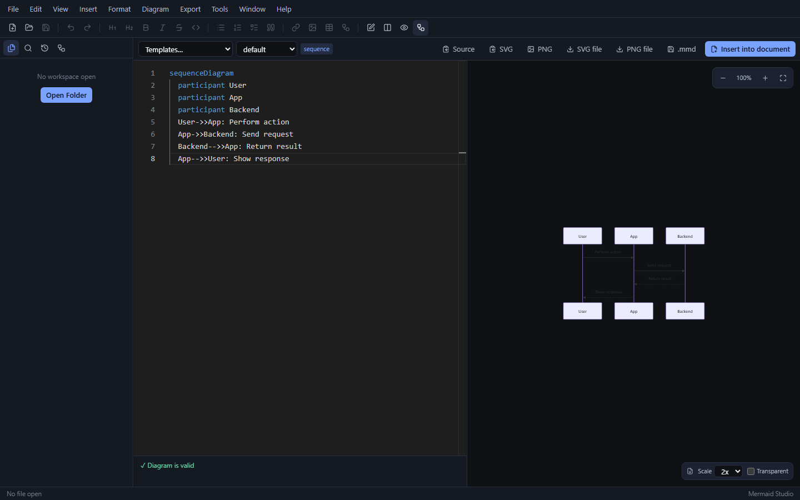
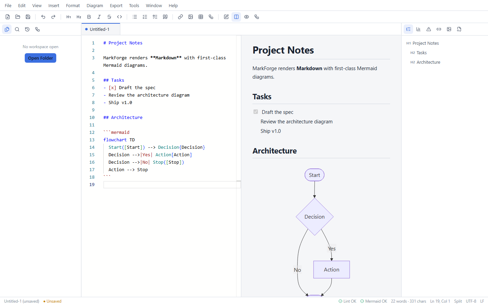
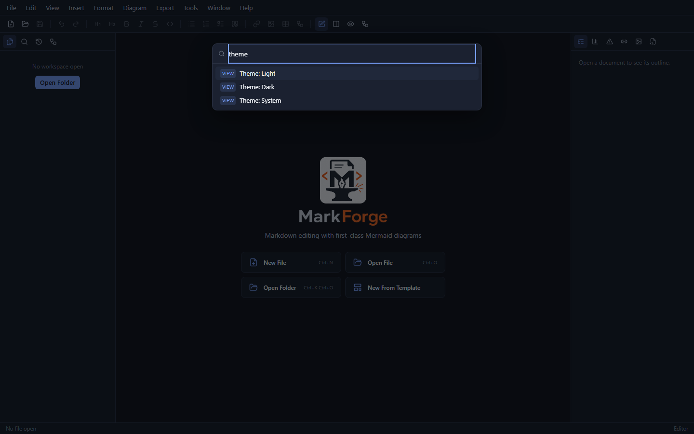
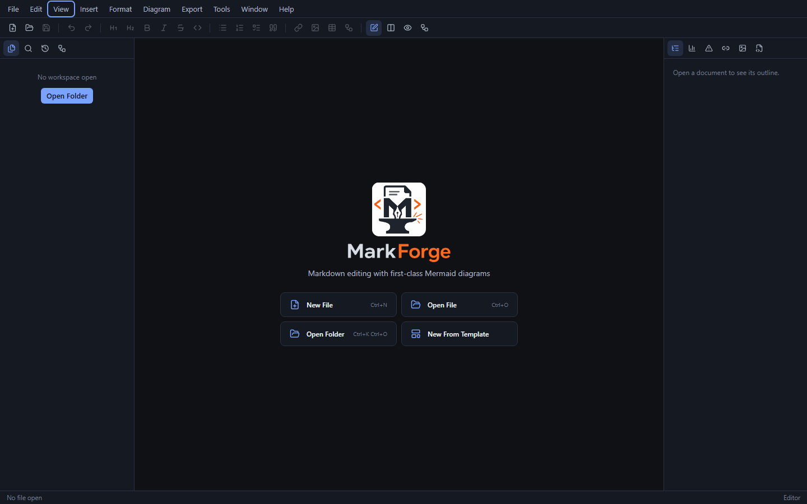

Everything a Markdown power user needs
Mermaid Studio
A dedicated diagram mode with 9 templates, live validation, zoom/pan preview, theme selection, and SVG/PNG export — then insert straight into your document.
Live preview
Sanitized markdown-it pipeline with callouts, task lists, footnotes, and TOC. Six preview themes and bidirectional scroll sync in split view.
Inline diagrams
Every ```mermaid fence renders independently with a content-hash cache. A broken diagram shows an error card — never a broken preview.
Monaco editor
The VS Code editor core, with Mermaid syntax highlighting inside fences, multi-cursor, snippets, and Markdown-aware list continuation.
Workspaces
Folder tree that respects .gitignore, full-text search, file operations, read-only Git status, and full session restore.
Export anything
Self-contained HTML with inlined diagram SVGs, PDF, DOCX, plain text, cleaned Markdown, Reveal.js slides, and batch diagram export.
Quality tooling
Markdown linter with editor markers, link checker, image asset manager, frontmatter editor, and autosave with crash-recovery snapshots.
Command-driven
Every menu item, toolbar button, and shortcut runs through one registry — all searchable from the command palette (Ctrl+Shift+P).
Screenshots




Download
Grab the latest build from the GitHub Releases page. Installed copies update themselves via Help → Check for Updates (Windows installer and AppImage builds).
Latest version: 1.0.0
Windows 10 / 11
markforge-1.0.0-windows-x64.exe
Self-contained NSIS installer — includes the WebView2 runtime, no internet required. Associates .md and .mmd files.
Linux — AppImage
markforge-1.0.0-linux-amd64.AppImage
Fully self-contained, runs on any distro with glibc 2.36+ (Debian 12, Ubuntu 22.04, and newer). No installation needed.
Ubuntu 24.04
markforge-1.0.0-ubuntu-24.04-amd64.deb
Native package; apt resolves all dependencies automatically.
Debian 12
markforge-1.0.0-debian-12-amd64.deb
Native package; also installs on Ubuntu 22.04+ and other Debian-based distros.